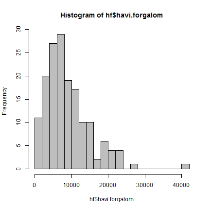
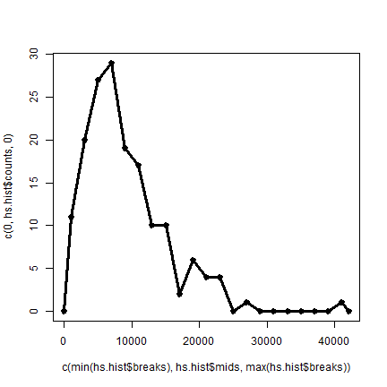
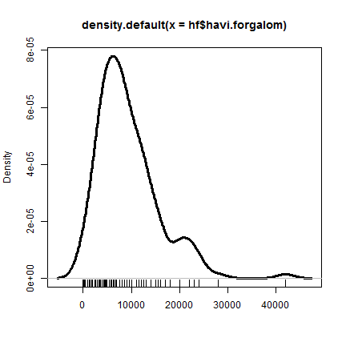
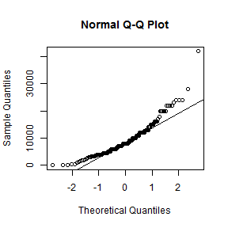
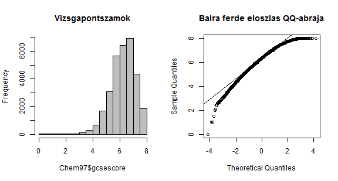
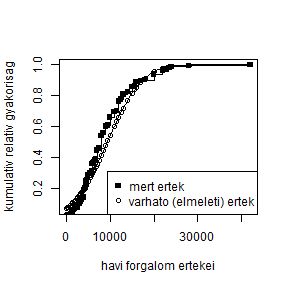

- Grafikus módszerek
- Ferdeség és csúcsosság alapján
- Illeszkedésvizsgálat alapján
- Kolmogorov-Szmirnov-próba
- Shapiro-Wilk-próba
- Jarque-Bera-próba
- Pearson-féle khi-négyzet próba
- ...
Statisztika I.
Próbák a normális eloszlás ellenőrzésére
4. óra
Normalitásvizsgálat
Grafikus illeszkedésvizsgálat
- hisztogram (
hist()), - gyakorisági görbe,
- simított hisztogram (
plot(density()), rug()), - szár-levél diagram,
- QQ-ábra (quantile-quantile plot) (
qqplot(),qqnorm(),qqline())
Példa
161 db patika havi forgalmának az adata (ezer Ft-ban) található a havi_forgalom.txt-ben. Vizsgáljuk meg a normalitási feltételt!
hf <- read.table(file = "data/havi_forgalom.txt", header = T, dec = ".")
str(hf)
## 'data.frame': 161 obs. of 1 variable:
## $ havi.forgalom: int 9000 4600 20000 20000 16000 6500 5800 8000 4400 13000 ...
head(hf, n = 4)
## havi.forgalom
## 1 9000
## 2 4600
## 3 20000
## 4 20000
Hisztrogram rajzolása
hs.hist <- hist(hf$havi.forgalom, breaks = 15, col = "gray")

Gyakorisági görbe rajzolása
plot(c(min(hs.hist$breaks), hs.hist$mids, max(hs.hist$breaks)), c(0, hs.hist$counts,
0), type = "o", lwd = 3)

Hisztogram vizuális összevetése a normális eloszlás görbéjével
hist(hf$havi.forgalom, freq = F, breaks = 15, col = "gray")
curve(dnorm(x, mean = mean(hf$havi.forgalom), sd = sd(hf$havi.forgalom)), add = T,
col = "blue", lwd = 3)

Simított hisztogram
plot(density(hf$havi.forgalom), xlab = "", lwd = 3)
rug(hf$havi.forgalom)

Simított hisztogram és összevetése a normális eloszlás görbéjével
plot(density(hf$havi.forgalom), xlab="", lwd=3);rug(hf$havi.forgalom)
curve(dnorm(x, mean=mean(hf$havi.forgalom), sd=sd(hf$havi.forgalom)),
add=T, col="blue", lwd=3)

Szár-levél diagram
stem(hf$havi.forgalom)
##
## The decimal point is 3 digit(s) to the right of the |
##
## 0 | 0013503588
## 2 | 0560002223569
## 4 | 000000003455555667000005588
## 6 | 000000002355800000000055
## 8 | 000000000000055500000005
## 10 | 000000000000005
## 12 | 00000000005500000
## 14 | 000000006
## 16 | 00000
## 18 | 0
## 20 | 000000
## 22 | 00000
## 24 | 000
## 26 |
## 28 | 0
## 30 |
## 32 |
## 34 |
## 36 |
## 38 |
## 40 |
## 42 | 0
##
Szár-levél diagram
Félgrafikai ábrázolás, amelyből az osztályozás ellenére az eredeti adatokról is kapunk információt, és ezen kívül a gyakorisági eloszlásról is benyomást szerzünk.
Egy adat értelmezése: szár| egy levél = az adat egész része a szár, a tört része a tekintett levél Pl.: \(2 | 0 = 2.0\) vagy \(2 | 5 = 2.5\) Vegyük figyelembe, hogy a szár egy-egy osztályt képvisel!
Az outputból kiolvasható, hogy a tizedesvesszőt 3 jeggyel jobbra kell vinni, azaz szoroznunk kell ezerrel. Így a tényleges adatok:
Pl.: \(2 | 0 = 2.0*1000= 2000\) vagy \(2 | 5 = 2.5*1000=2500\)
QQ-ábra (quantile-quantile plot)
Az ábra segítségével szemrevételezéssel eldönthetjük, hogy az \(n\) elemű minta származhat-e egy hipotetikus eloszlásból.
A módszer alapja, hogy a rendezett minta \(i\)-edik értéke várhatóan a hipotetikus eloszlás \(i/n\) kvantilese közelében lesz.
A QQ-ábra \(n\) elemű (rendezett) minta esetében \(n\) db pontot tartalmaz, melyek (\(x_i\), \(y_i\)) koordinátái:
\(x_i\) a hipotetikus eloszlás \(i/n\) kvantilese, \(y_i\) a rendezett minta \(i\)-edik értéke (ami egyben a tapasztalati eloszlás \(i/n\) kvantilese.
A QQ-ábra mögött
# A hipotetikus eloszlás kvantilisei
elmeleti.q <- qnorm(1:length(hf$havi.forgalom)/
length(hf$havi.forgalom),
mean=mean(hf$havi.forgalom),
sd=sd(hf$havi.forgalom))
# a tapasztalati kvantilisek (a rendezett minta)
tapasztalati.q <- sort(hf$havi.forgalom)
# pontok megjelenítése: QQ-ábra
par(mar=c(2,2,2,2))
plot(elmeleti.q, tapasztalati.q)

## QQ-ábra az R-ben
qqnorm(hf$havi.forgalom)
qqline(hf$havi.forgalom) # egyenes rajzolása

QQ-ábra (quantile-quantile plot)
- Ha a hipotetikus eloszlásfüggvény jól illeszkedik a mintához, akkor a pontok az \(y=x\) egyenes közelében helyezkednek el. A pontok egyeneshez való illeszkedése szemrevételezéssel elég jól eldönthető. Az eltérések akkor tekinthetők véletlennek, ha nincs bennük szabályosság, tendencia.
- Az R-beli
qqnorm()függvény a standard normális eloszlást tekinti hipotetikus függvénynek, így az egyenes nem feltétlenül az \(y=x\). - Az R-beli
qqplot()függvénnyel tetszőleges hipotetikus eloszlást választhatunk (pl. t-eloszlást, F-eloszlást stb.).
161 patika havi forgalma
par(mfrow = c(1, 2))
hist(hf$havi.forgalom, col = "gray", main = "Havi forgalom")
qqnorm(hf$havi.forgalom, main = "Jobbra ferde eloszlas QQ-abraja")
qqline(hf$havi.forgalom)

31022 vizsgázó adata
data(Chem97, package = "mlmRev")
par(mfrow = c(1, 2))
hist(Chem97$gcsescore, col = "gray", main = "Vizsgapontszamok")
qqnorm(Chem97$gcsescore, main = "Balra ferde eloszlas QQ-abraja")
qqline(Chem97$gcsescore)

272 kitörési adat az Old Faithful gejzírről
par(mfrow = c(1, 2))
hist(faithful$eruptions, col = "gray", main = "Kitoresek idotartama (perc)")
qqnorm(faithful$eruptions, main = "Bimodalis eloszlas QQ-abraja")
qqline(faithful$eruptions)

Ferdeségi és csúcsossági együtthatók
Ferdeségi együttható (\({\gamma _1}\)): az eloszlás horizontális alakját leíró mutatószám. Pozitív érték esetén az eloszlás jobbra ferde, míg negatív érték esetében balra ferde. A felvehető értékeknek nincs felső vagy alsó határa. Normális eloszlású változó ferdeségi együtthatója nulla. Kiszámítása a mintából:
\[{\gamma _1} = \frac{{{m_3}}}{{{s^3}}},\;{m_3} = \frac{{\sum\limits_{i = 1}^n {{{({x_i} - \overline x )}^3}} }}{n}\]
Ferdeségi és csúcsossági együtthatók
Csúcsossági együttható (\({\gamma_2}\)): az eloszlás alakját vertikálisan leíró mutatószám. Normális eloszlású változó csúcsossági együtthatója nulla. Pozitív érték esetén az eloszlás ehhez képest csúcsosabb, míg negatív érték esetében laposabb. A felvehető értékeknek nincs felső vagy alsó határa. Kiszámítása a mintából:
\[{\gamma _2} = \frac{{{m_4}}}{{{s^4}}},\;{m_4} = \frac{{\sum\limits_{i = 1}^n {{{({x_i} - \overline x )}^4}} }}{n}\]
Ferdeségi és csúcsossági együtthatók az R-ben
# ferdeség és csúcsosság
library(psych)
skew(hf$havi.forgalom)
## [1] 1.468
kurtosi(hf$havi.forgalom)
## [1] 3.724
Ha a ferdeségi és/vagy a csúcsossági mutatók értéke meghaladja a +1 vagy a -1 értéket, akkor az azt jelenti, hogy az adott eloszlás különbözik a normális eloszlástól.
Hipotézisvizsgálat az alakmutatókra
Ha a ferdeség és a csúcsosság értékét osztjuk azok standard hibájával, akkor hipotézisvizsgálatot is végrehajthatunk (\(H_0: {\gamma_1}=0\) és \(H_0: {\gamma _2}=0\)).
# hip.vizsgálat a ferdeségre és csúcsosságra, p-értékek
# meghatározása
u <- skew(hf$havi.forgalom)/sqrt(6/length(hf$havi.forgalom))
2 * (1 - pnorm(u))
## [1] 2.82e-14
u <- kurtosi(hf$havi.forgalom)/sqrt(24/length(hf$havi.forgalom))
2 * (1 - pnorm(u))
## [1] 0
Illeszkedésvizsgálat
Hipotézisvizsgálat (család), amely során egy ismeretlen eloszlást – amelyikből a mintát vettük- hasonlítunk össze egy hipotetikus eloszlással.
\(H_0\): Az ismeretlen eloszlás, amelyből a minta származik, a hipotetikus eloszlással azonos (vagy abba az eloszláscsaládba tartozik).
\(H_1\): Az ismeretlen eloszlás különbözik a hipotetikus eloszlástól (illetve nem abba a családba tartozik).
Kolmogorov-Szmirnov-próba
A normalitás vizsgálatára egymintás Kolmogorov-Szmirnov próbát használjuk, amely azt vizsgálja, hogy a minta vajon adott (pl. normális, Poisson, egyenletes, exponenciális, stb.) eloszlású-e? \(H_0\): A populáció adott (esetünkben normális) eloszlású
A próba lényege, hogy az elméleti és az empirikus eloszlásfüggvény közötti maximális eltérést hasonlítunk össze a táblázatbeli kritikus értékkel. (Ez a minta elemszámától és a szignifikancia szinttől függ.)
Kolmogorov-Szmirnov-próba
\(D\)-vel jelöljük a lehető legnagyobb eltérést az empirikus és az elméleti eloszlásfüggvény között. Ezt az értéket hasonlítjuk a össze a Kolmogorov-Szmirnov táblázat kritikus \(Dkrit({\alpha} ,n)\) értékével: ha \(D < Dkrit\), akkor elfogadjuk \(H_0\)-t, az elméleti és az empirikus eloszlás közötti eltérés nem szignifikáns. ha ha \(D > Dkrit\) , akkor elvetjük \(H_0\)-t, az elméleti és az empirikus eloszlás közötti eltérés szignifikáns
Kolmogorov-Szmirnov-próba
# elméleti eloszlásfüggvény
f.r <- sort(hf$havi.forgalom); n <- length(f.r)
curve(pnorm(x, mean=mean(f.r), sd=sd(f.r)),xlim=range(f.r), xlab="havi forgalom ertekei", ylab="kumulativ relativ gyakorisag")
points(f.r, pnorm(f.r, mean=mean(f.r), sd=sd(f.r)))
# tapasztalati eloszlásfüggvény
f.r.t <- table(f.r); points(names(f.r.t), cumsum(f.r.t/sum(f.r.t)), pch=15, type="p")
points(names(f.r.t), cumsum(f.r.t/sum(f.r.t)), pch=15, type="s")
legend("bottomright", pch=c(15,1), legend=c("mert ertek", "varhato (elmeleti) ertek"))

Kolmogorov-Szmirnov-próba
# az előző parancsok folytatásaként
D <- max(abs(pnorm(f.r, mean = mean(f.r), sd = sd(f.r)) - 1:n/n))
\[Z = \sqrt n \cdot D = \sqrt n \cdot \max \left| {{F_{tap}} - {F_{elm}}} \right|\]
A Kolmogorov-Smirnov Z-érték a megfigyelt és teoretikus kumulált eloszlás függvények közötti legnagyobb abszolút különbségből számítják. Ezt az értéket szorozzák a megfigyelések négyzetgyökével. A Z-érték alapján számolható ki a p-érték, az ún. Kolmogorov eloszlás alapján. A Kolmogorov-Smirnov teszt módosítása a Lilliefors-próba, amely Lilliefors eloszlást használ a nullhipotézis tesztelésére.
Kolmogorov-Szmirnov-próba az R-ben
# az eredeti K-S-próba
ks.test(hf$havi.forgalom, "pnorm", mean = mean(hf$havi.forgalom), sd = sd(hf$havi.forgalom))
## Warning: ties should not be present for the Kolmogorov-Smirnov test
##
## One-sample Kolmogorov-Smirnov test
##
## data: hf$havi.forgalom
## D = 0.1249, p-value = 0.01315
## alternative hypothesis: two-sided
##
A Kolmogorov-Szmirnov-próba Lilliefors változata
# Lilliefors változat
library(nortest)
lillie.test(hf$havi.forgalom)
##
## Lilliefors (Kolmogorov-Smirnov) normality test
##
## data: hf$havi.forgalom
## D = 0.1249, p-value = 1.939e-06
##
Shapiro-Wilk-próba
\(H_0\): Az adott változó normál eloszlást követ
\(H_1\): Az adott változó NEM normál eloszlást követ
- A legmegbízhatóbb eljárás a normalitás hiányának detektálására kis és közepes méretű minta esetében .
- Csak azt állapítja meg, hogy egy változó nem normális eloszlást követ, de nem garantálja a normalitást.
- A teszt során kiszámolt W próbastatisztika értéke maximum 1 lehet.
- Ennél kisebb érték esetén nem normális az eloszlás.
Shapiro-Wilk-próba az R-ben
shapiro.test(hf$havi.forgalom)
##
## Shapiro-Wilk normality test
##
## data: hf$havi.forgalom
## W = 0.8983, p-value = 4.196e-09
##
8. Házi feladat
13 legfeljebb 8 általánost végzett, 28-45 éves nő Rorschach-tesztbeli feleletszáma (fsz) a következő: 8, 10, 11, 11, 13, 17, 18, 20, 22, 23, 28, 35, 41.
Állapítsuk meg (az összes szóba jöhető módszer közül legalább 3-mal) ezen minta alapján, hogy az adott iskolázottságú és életkorú nők populációjában normálist eloszlást követ-e a Rorschach-fsz változó!